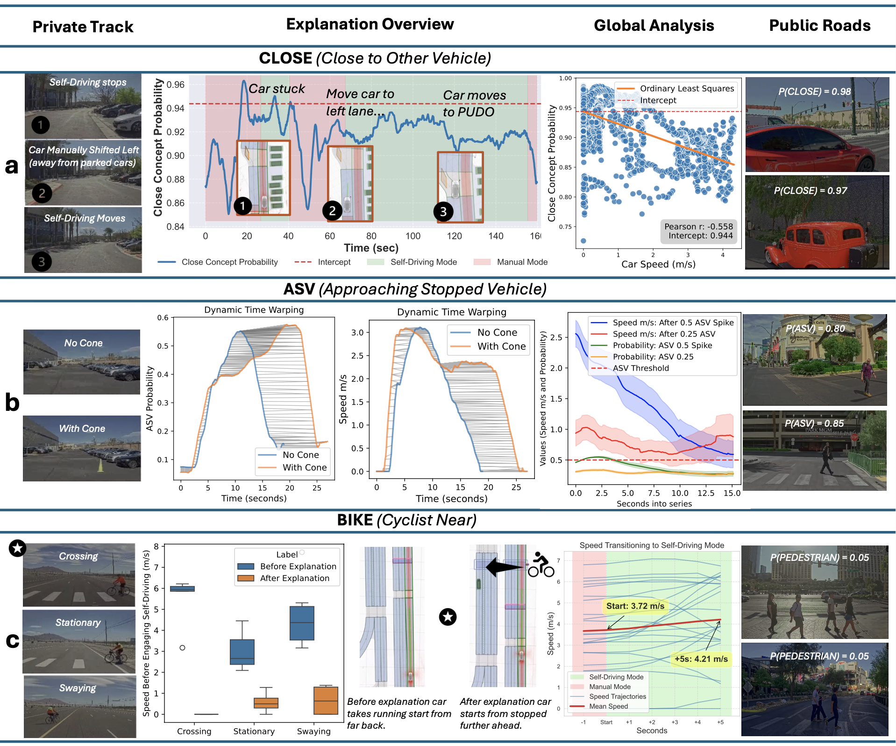
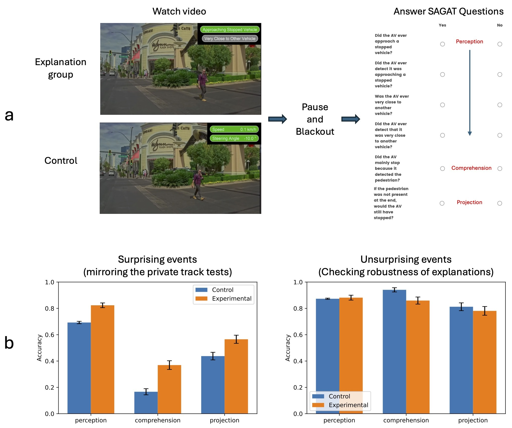

Explainable deep learning improves human mental models of self-driving cars：解释如何纠正对自动驾驶的理解
1. 背景与核心判断
Eoin M. Kenny 等，MIT、Motional 与 Harvard 合作，发表于 Nature 657, 114–120（2026-09-02）。方法名为 Concept-Wrapper Network（CW-Net）。论文正文与 Methods · 补充材料 · 项目与视频 · 公开代码与数据。
这篇论文最值得读的，是解释如何让人发现规划器的局限。 CW-Net 在预训练规划器末端加入受监督的概念层，让轨迹评分经过人能理解的概念表示，并向人显示这些概念。作者用真实车辆案例和视频实验说明：当车辆行为出人意料时，这类信息能纠正人对系统的理解，帮助预测后续行为。
我认为它最扎实的贡献是把解释评价推进到了人的判断任务。需要保留的边界是：概念表示参与决策、概念语义准确、人类理解改善、整车安全提升，是四个不同的命题，本文对它们的证据强度并不相同。
2. 关键问题：安全刹停也可能让人误判系统能力
论文中的真实案例（Fig. 3c）：安全员反复让车辆接近骑行者，车辆每次都安全停下。按这个行为推断，“规划器能识别骑行者并可靠停车”很自然。但界面上的 BIKE（靠近骑行者）概念概率一直低于 1%。安全员看到这个信息后，逐渐降低启用自动驾驶时的车速。
事后分析发现：感知模块确实检测到了骑行者，但规划器没有配置为接收骑行者输入，仍会选出可能碰撞的轨迹；真正让车辆停下的是独立的后备安全制动系统。（正文 Reacting safely to cyclist）
这里的 mental model（心理模型），指人对“系统知道什么、为什么这样行动、换个条件会怎样”的内部理解。仅观察“它停下了”，无法区分规划器主动避让与后备系统兜底。若人在下一次、更困难的接近中仍依赖错误理解，就可能高估系统能力。
因此，解释需要提供人从结果中看不到的信息，并让人形成可检验的预测。一个听起来合理的刹车理由，还不足以完成这件事。
3. 关键方法：让概念进入轨迹评分，再把它显示给人
从骑行者案例走一遍计算过程
原系统采用基于逆强化学习的规划器。其输入 $s$ 是感知模块输出的对象、道路和路线等符号化场景信息。候选轨迹生成器 $G$ 与场景编码器共同产生 146 条候选轨迹：143 条来自启发式生成器，3 条来自 HiVT。场景编码器 $H$ 与场景—轨迹编码器 $E$ 为每条轨迹生成表示 $z_i$；原奖励头 $R$ 给它评分，再选最高分轨迹。（Fig. 1；Methods, Architecture）
CW-Net 保留上述表征与候选轨迹，把末端改成：
$C$ 是概念分类器，$c_i$ 是一组有概念标签监督的连续 logit；$R'$ 是新的奖励头，二者均为 MLP。概念 logit 经 sigmoid 或 softmax 转成概率后显示给人。界面显示的是被选中轨迹对应的概念输出，如 ASV（接近停着的车辆）、CLOSE（靠近另一辆车）或 BIKE。
回到骑行者案例：上游缺少供规划器使用的骑行者信息，概念头也没有给出有效 BIKE 激活，奖励头仍可能选中危险轨迹。随后，规划器之外的安全系统触发刹停。安全员同时看到“车辆停了”和“BIKE 几乎没激活”，才获得怀疑规划器能力的线索。概念界面本身没有修好这个缺陷；它暴露了单看车辆行为容易漏掉的问题。
为什么同时训练概念分类与轨迹模仿？
训练时冻结 $G,H,E$，只更新 $C,R'$。作者联合优化两个目标：
概念损失让各维对应给定语义：互斥类别用交叉熵，可共现概念用二元交叉熵；第二套数据全部采用二元交叉熵。轨迹损失则以原黑箱规划器选中的轨迹为目标做交叉熵训练，并使用 focal loss 处理不平衡。（Methods, CW-Net training）
这两个约束分别回答“人能否读懂中间表示”和“改造后还能否保持原来的驾驶选择”。只训练概念头，无法保证新的奖励头保留原策略；只模仿轨迹，又没有理由期待中间维度对应可读概念。代价是：蒸馏目标也会保留原策略的错误，这一训练过程没有以纠正驾驶错误为目标。
作者称这种串联架构具有 causal faithfulness，依据是 $R'$ 只能通过 $c_i$ 获得评分输入。相比给原网络旁接一个解释头，这确实把概念表示放进了计算通路。但它首先保证的是“评分经过这组连续表示”；是否完整地经过人理解的概念语义，还需要额外验证。
一个必须单列的例外：真实车辆的 CLOSE 案例实际使用了另一种并行架构，$C(z_i)$ 与原 $R(z_i)$ 并行运行，概念输出不决定轨迹评分。Methods 的 Alternative architecture 和 Extended Data Fig. 1 明确说明了这一点。因此，不能把三个车辆案例都算作串联概念瓶颈的因果验证。
数据与行为保持：保留策略和读准概念，要分别检验
概念层要供人理解，首先需要确认它没有大幅改变原规划器的行为；随后还要检查，显示给人的概念是否准确。这是两个不同的问题，轨迹选择接近原模型，并不能替代概念质量的检验。
原规划器用 80 小时专家驾驶训练。概念训练有两套数据：50 万场景、8 个概念，以及 300 万场景、10 个概念；每个场景对应 146 条候选轨迹。CLOSE/ASV 使用第一套，BIKE/PEDESTRIAN 使用第二套。概念分类用各数据集的 5% 留出集验证。（Methods, CW-Net training / Simulation results）
行为保持方面，补充 Tables S1–S2 的轨迹选择准确率为 0.94/0.95，nuPlan 闭环仿真也支持两者驾驶表现总体接近。概念分类则弱得多：作者报告平均 accuracy 为 0.54、precision 为 0.23、recall 为 0.77、F1 为 0.31；具体到 BIKE，表中 F1 舍入后为 0.00，PEDESTRIAN 为 0.07。
模型大体保留了原策略，概念识别质量却很不均衡。 作者认为，概念识别失败有时恰好能帮助发现规划器的局限，骑行者案例支持这种用途。但其他低分概念仍需区分：究竟是规划器缺少相应能力，还是新增分类头没有读准表征。
nuPlan 中“所有指标差异小于 1%”的表述为何需要修正
Extended Data Table 1 中，静止起步场景的 10 秒 L2 误差由原规划器的 4.673006 降至 CW-Net 的 4.611888，按前者为分母，相对下降约 1.31%（据表计算）。这处差异方向是改善，不影响“总体接近”的判断，但正文“所有指标差异小于 1%”的百分比上限不宜原样复述。
4. 关键证据：解释能否改变人对系统的判断？
4.1 先看现场：解释能否提出可检验的原因？
骑行者案例让安全员怀疑规划器的能力。另两个私人测试场案例进一步检查：按解释改变现场条件后，车辆行为是否也按这个解释变化？ 这一步让解释从一个理由变成可检验的假设。
- CLOSE：车辆在上下客区域前停住，安全员最初归因于区域本身。解释提示它靠近停放车辆；手动挪远后，CLOSE 概率下降，车辆恢复前进。
- ASV：车辆在锥桶旁反复停车，解释却提示接近停着的车辆。移除锥桶后，车辆仍在原处停车，ASV 仍激活，支持规划器把该位置误匹配到“接近停着车辆”场景的解释。

原论文 Fig. 3，图片取自作者项目页，未修改。看 c 行：安全员观察解释后降低了启用自驾的速度；a、b 行展示移动车辆、移除锥桶后的行为证据。Kenny 等，2026，CC BY 4.0。
这些观察支持解释帮助人形成、修正对行为原因的判断。它们仍是个案证据，没有提供跨驾驶员的随机对照或总体安全收益；CLOSE 还使用了第 3 节说明的并行架构，不能把该案例当作串联概念瓶颈的因果验证。作者公开仓库另澄清：Fig. 3c 的 23 次骑行者试验是解释前 14 次与解释后 9 次的合计，不能读成 23 名驾驶员或第二轮单独 23 次。
4.2 再看观看者：知道原因后，能否更好地预测反事实？
现场案例提供了线索，还需要直接测量人的判断。作者让 9 名专家和 30 名非专家观看三个私人测试场场景：先看无解释视频，选择行为原因、回答反事实预测题并给出置信度；再看带解释的同一视频，重复作答。另收集自由文本理由。（Methods, Mental model elicitation studies）
先看最直观的预测题正确率：
| 人群 | 解释前预测正确率 | 解释后预测正确率 | 来源 |
|---|---|---|---|
| 专家，9 人 | 37.04% | 44.44% | Table S3，三个场景平均 |
| 非专家，30 人 | 26.67% | 53.33% | Table S4，三个场景平均 |
两组平均正确率都有提高，非专家的变化更大；解释后仍留下不少错误。 尤其专家在 CLOSE 场景的正确率只从 0.00% 到 11.11%，说明提供解释还不足以保证参与者掌握该场景的反事实规律。
正文还报告 8/9 专家、27/30 非专家的“心理模型改善”。这个人数使用了更宽的标准：既包括答错转答对，也包括对正确判断更自信、对错误判断降低自信。因此，它与表中的预测正确率是两种口径，不能读成这么多人把预测题答对了。原因判断的改善也与预测准确性/置信度的改善相关（混合效应模型，Extended Data Fig. 5），但这种相关性尚未独立证明前者导致后者。
这项实验说明参与者在看到解释后改变了判断。由于顺序固定为“先无解释、后有解释”，变化中仍混合了重复观看、再次作答与解释本身的作用；实验也没有检验离开界面后，理解能否迁移到新场景。
自由文本理由怎样评分，人工核验覆盖多少
自由文本分析使用 GPT-5 判别前后回答哪一个更接近给定解释；prompt 在专家回答上调整三轮，再用于非专家回答。补充材料对 6 名非专家、54 组判断做了双人核验，模型与两位评判者的一致率分别为 85% 和 80%。这是有人工抽查的模型评分，不能记为全文人工盲评。（Supplementary Methods, Evaluating free-form human responses）
4.3 换成组间比较：异常场景的帮助最清楚，常规场景仍有下降信号
前后对照中，同一个人会重复观看视频。作者另做了一项有 99 名有效参与者的组间实验，比较两组人在不同界面下的表现：对照组看到速度和转向角，实验组看到概念激活。两组都采用 SAGAT（Situation Awareness Global Assessment Technique，情境意识全局评估），在视频关键点暂停、遮黑画面，再回答感知、理解与预测问题。（Extended Data Figs. 7–8）
材料来自 Las Vegas 公共道路的人工驾驶视频，CW-Net 在后台运行；作者选择了人类驾驶行为模拟先前规划器异常的片段。参与者实际完成的是在线回放任务，所以这里检验的是概念信息能否帮助观看者理解行为，而非公共道路上的闭环驾驶或接管效果。（Methods, Public roads evaluation using SAGAT）

原论文 Extended Data Fig. 7，图片取自作者项目页，未修改。上半部分交代两组看到的信息与问题；下半部分应左右对照阅读：收益集中在异常场景，常规场景的理解题存在下降趋势。Kenny 等，2026，CC BY 4.0。
异常场景的三个维度在 Bonferroni 多重比较校正后均显著改善。下面用 Cohen's d 表示两组差异的效应量，数值为正表示概念界面组更好：（正文 Explanations and situational awareness；Table S6）
| 维度 | 测什么 | Cohen's d | 95% CI |
|---|---|---|---|
| Perception | 场景里有什么、系统检测到了什么 | 1.290 | [0.857, 1.723] |
| Comprehension | 系统为什么这样行动 | 0.996 | [0.578, 1.413] |
| Projection | 条件改变后会怎样 | 0.606 | [0.203, 1.009] |
在这些视频和题目上，概念信息比速度/转角信息更有助于理解异常行为。 对模型状态的感知和理解收益较大，预测收益较小。因此，结果具体支持的是这些判断任务的改善，不能概括为心理模型各方面都同样提高。
常规场景提供了一个重要反例：多重校正后各维度没有显著差异，但理解维度的效应方向为负，$d=-0.514$，未校正 $p=0.011$（Table S6）。这是需要进一步研究的下降信号。作者没有做等效性或非劣性检验，“未发现校正后显著下降”也不能当作已经证明没有副作用。
组间实验的场景、样本与界面对照
材料共包含 6 个异常场景、6 个常规场景和 1 个注意力检查；因没有自然出现的骑行者，用行人场景替代 BIKE。招募 100 人，经筛选得到 99 份有效结果：实验组 51 人、对照组 48 人。对照组显示速度和转向角，是为了尽量平衡与概念界面之间的信息展示负荷。（Methods, Public roads evaluation using SAGAT；Extended Data Figs. 7–8）
5. Insights：接下来最值得验证什么
1. 连续概念瓶颈建立了计算依赖，语义忠实还需要干预验证。 本文的 $R'$ 只接收概念 logit，但 logit 的连续数值可能携带超出概念标签的信息；非线性奖励头也未给出每个概念对轨迹偏好的独立贡献。我会补做固定其他概念、干预 BIKE/ASV 后的轨迹选择测试，再比较连续与离散概念版本。这样才能判断行为变化是否对应概念语义。这里指出的是尚未排除的可能性，论文没有证明存在信息泄漏。
2. 人学会模型规律，与人读到额外状态信息，需要分别测量。 SAGAT 中部分感知题直接询问系统检测到了什么，而概念界面提供的正是这类信息。相对速度/转角，实验组有明确的信息优势；这足以构成实用收益，却不能单独证明形成了持久心理模型。更有辨别力的下一步，是在熟悉阶段给解释，测试阶段去掉界面，并更换场景；同时加入内容相当的简单状态提示作为对照。这样才能估计收益中有多少来自持续理解，有多少来自当场读取提示。
3. 骑行者案例提示，校准信任需要解释整条安全链。 BIKE 低激活让安全员更谨慎，后续分析才确认后备系统在刹停。若实际部署，我会同时显示“规划器选择了什么”和“安全制动是否覆盖了它”，并评估人的干预时机与系统依赖是否更恰当。仅显示概念分数，仍要求用户自己推断最终动作由哪个模块决定。本文支持这个后续问题的必要性，尚未验证这套界面或其安全收益。
6. 连接与复用范围
- MOC-Interpretability — 将可解释性评价从模型内部描述推进到人对失败原因和反事实行为的判断，同时暴露计算忠实、语义忠实与系统级解释之间的距离。
如果要复用，我会优先借鉴“真实异常 → 提出替代解释 → 反事实测试 → 人类预测任务”的实验设计。公开仓库包含匿名研究数据、图表分析代码、问卷和玩具驾驶域示例；真实车辆模型权重及完整训练代码没有公开，驾驶基准和概念分类表也缺少可公开复算的原始模型输出。因此，公开材料适合复核人类实验统计和研究方法，不足以完整重训论文中的车辆规划器。
本笔记基于正式版全文、Methods、补充材料及作者仓库说明；已查看所用原图与关键补充表，未执行模型训练、车辆测试或统计复现实验。
#Research #Paper #Interpretability #Autonomous_Driving #Human_AI_Interaction
📝 修订记录
- 2026-11-04：按现场原因检验、人的反事实预测与组间比较重组证据节，分清正确率和综合改善口径，将评分与样本细节折叠；保留常规场景下降信号和实验范围。